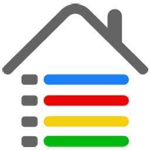

Ruta a:
Seleccione
Academia de Beisbol. El Carmen
Beto Ávila. Veracruz
Manuel L. Almanza. Ch.
Angel Stadium. Anaheim
Monumental Estadio Chihuahua
Gran Estadio Parral
Nelson Barrera Romellon. Camp
Estadio Revolución. Laguna
Estadio Sonora
Manuel L. Barragán. Mty
Teodoro Mariscal. Mzt
Yankee Stadium. NY
Estadio Azteca. DF
Estadio Universitario. DF
Luis "Pirata" Fuentes, Ver
Reyes Baeza Terrazas, Ch
